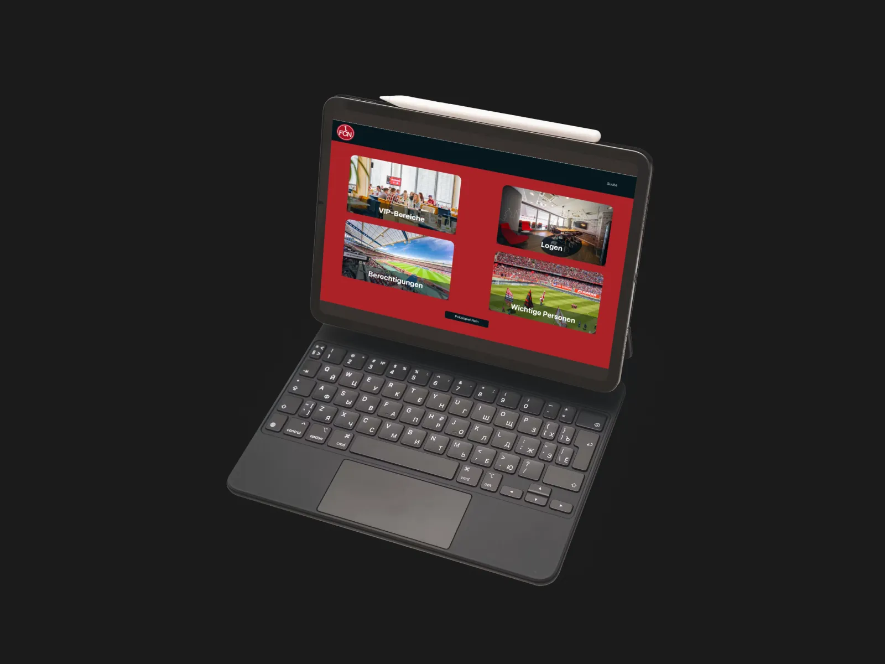
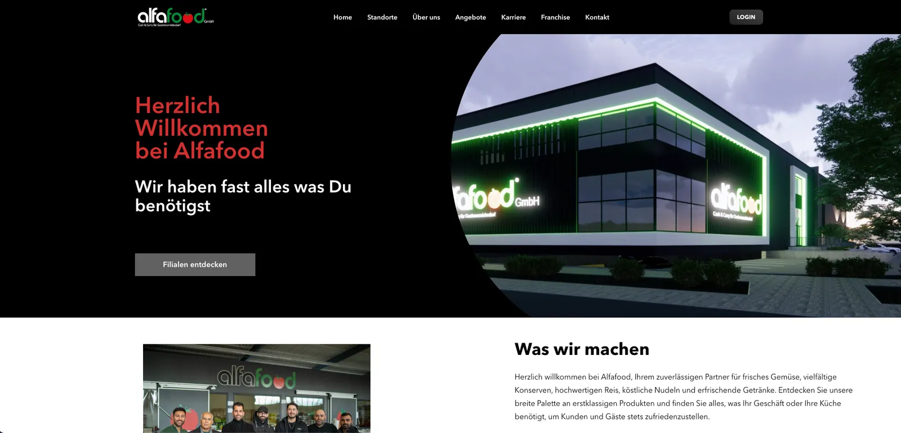
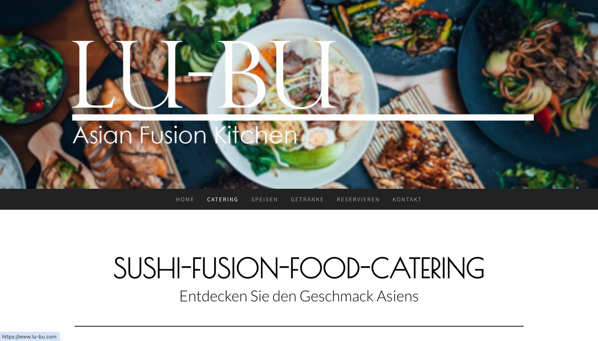
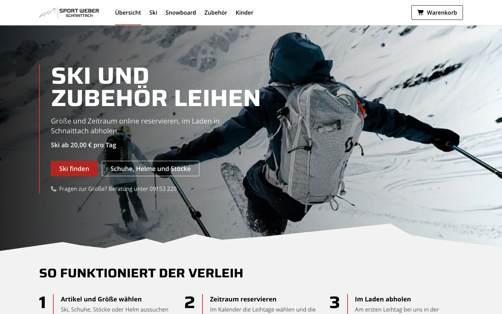
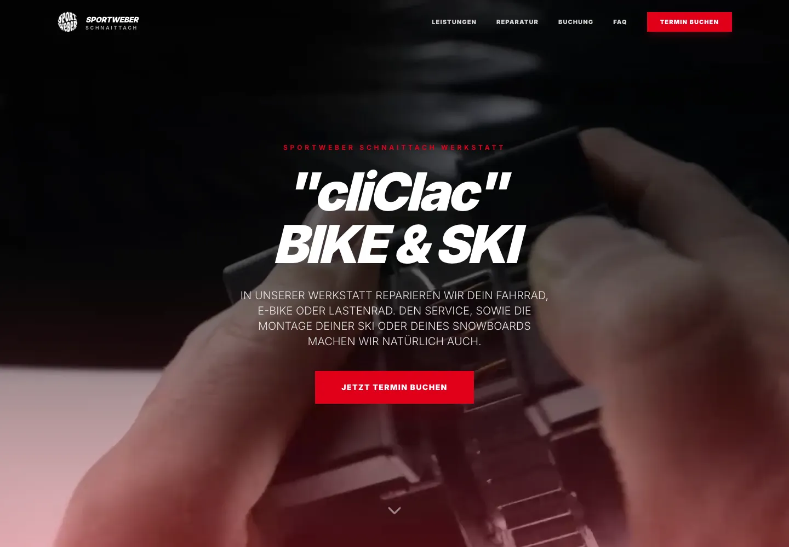
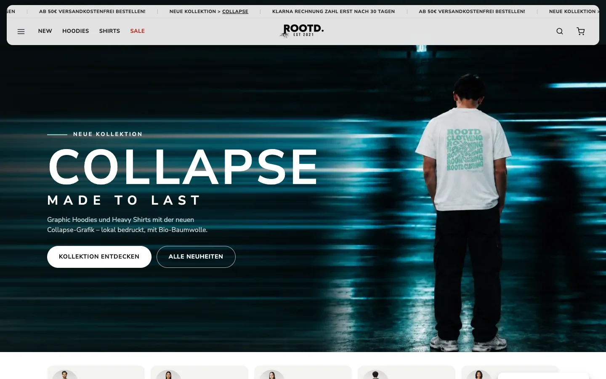
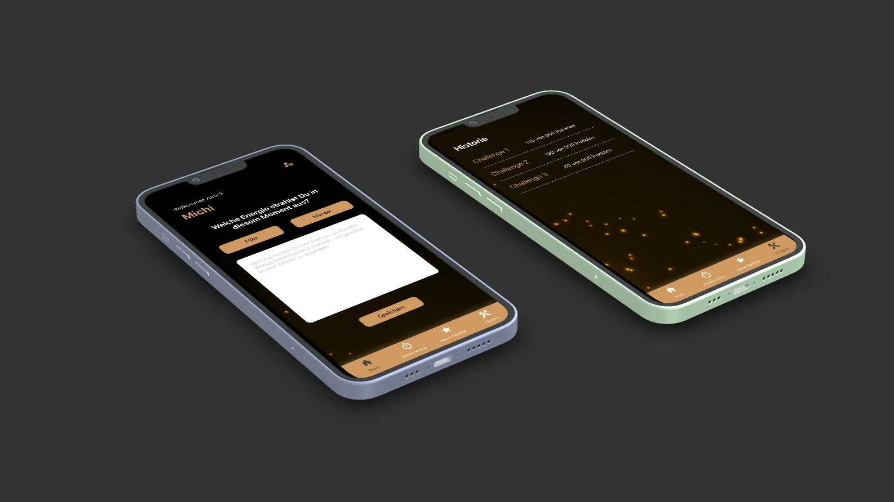
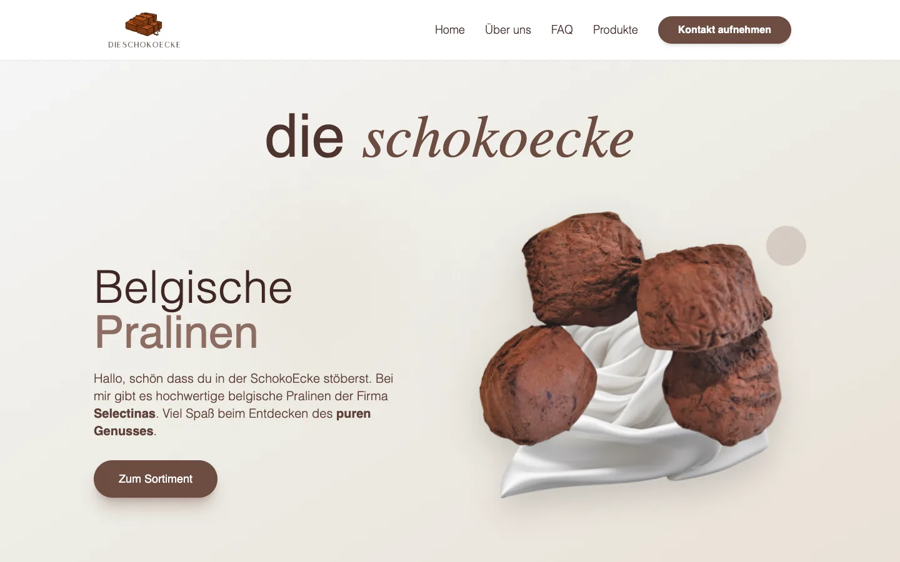
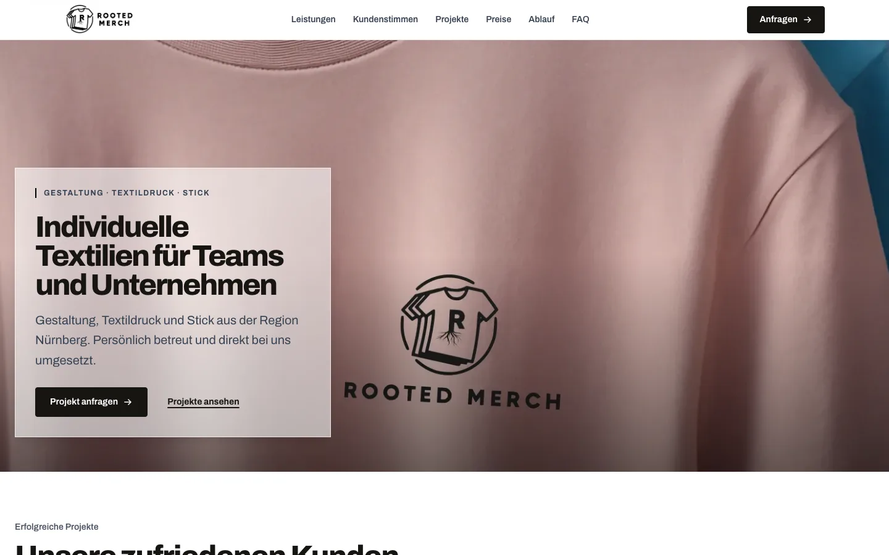

Vom Familienbetrieb bis zum Bundesliga-Verein.
Webseiten, Apps und Software, die im Alltag echter Betriebe funktionieren. Schau dir an, was wir umgesetzt haben.
- Google-Ranking
- Platz 1
- bei Google für das Sushi-Catering von LU-BU
- Größter Kunde
- Bundesliga
- der 1. FC Nürnberg setzt am Spieltag auf unsere App
- Projekte
- 9 Projekte
- aus Web, App, SEO und Individualsoftware

1. FC Nürnberg
Business Seating App für den VIP-Bereich: Platzvergabe, Zutrittsberechtigungen und kurzfristige Änderungen – direkt auf dem Tablet, an jedem Heimspieltag im Einsatz.
„Durch die Zusammenarbeit sparen wir uns viel Zeit und die Arbeit wird deutlich einfacher.“Projekt ansehen

Alfafood
Webseite mit Selbstpflege und geschütztem Franchise-Bereich: Inhalte, Bilder und ganze Filialen verwaltet das Team komplett selbst.
Projekt ansehen
LU-BU Asian Food
Catering-Landingpage plus laufende SEO-Betreuung – Platz 1 der unbezahlten Google-Ergebnisse für „Sushi Catering Nürnberg“.
Projekt ansehen
Sport-Weber Verleih
Online-Verleihsystem mit Warenkorb und Admin-Bereich – inklusive automatischer Rechnungserstellung bei jeder Buchung.
Projekt ansehen
Sport-Weber Bikeservice
Service-Plattform für die Fahrradwerkstatt mit Online-Terminbuchung, Service-Paketen und FAQ.
Projekt ansehen
ROOTD.
Online-Shop für das nachhaltige Streetwear-Label aus Schnaittach – mit Produktkatalog, Warenkorb und Klarna-Rechnungskauf.
Projekt ansehen
Tobias Herrmann
ManifeSTATE: App für iOS und Android mit 30-Tage-Challenges, Punktesystem und Notizen für die tägliche Begleitung.
Projekt ansehen
dieschokoecke
Webseite mit Selbstverwaltung für die Pralinen-Manufaktur: Sortiment, Texte und FAQ bleiben ohne Technikwissen aktuell.
Projekt ansehen
ROOTED Merch
B2B-Webseite für bedruckte Vereins- und Firmenkleidung – mit klarem Anfrageweg für Musterdesigns.
Projekt ansehenDein Projekt könnte das nächste sein.
Erzähl uns von deiner Idee. Im kostenlosen Erstgespräch klären wir, was sinnvoll ist und welcher Rahmen realistisch ist.